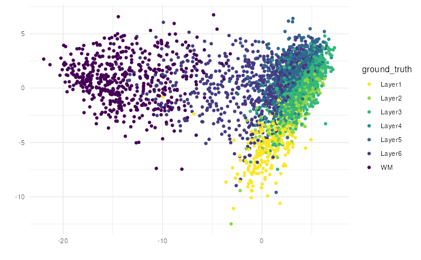

Beyond Sequence-based Spatially-Resolved Data
Source:vignettes/more_than_visium.Rmd
more_than_visium.Rmd
library(escheR)
#> Loading required package: ggplot2
library(STexampleData)
#> Loading required package: ExperimentHub
#> Loading required package: BiocGenerics
#>
#> Attaching package: 'BiocGenerics'
#> The following objects are masked from 'package:stats':
#>
#> IQR, mad, sd, var, xtabs
#> The following objects are masked from 'package:base':
#>
#> anyDuplicated, aperm, append, as.data.frame, basename, cbind,
#> colnames, dirname, do.call, duplicated, eval, evalq, Filter, Find,
#> get, grep, grepl, intersect, is.unsorted, lapply, Map, mapply,
#> match, mget, order, paste, pmax, pmax.int, pmin, pmin.int,
#> Position, rank, rbind, Reduce, rownames, sapply, setdiff, sort,
#> table, tapply, union, unique, unsplit, which.max, which.min
#> Loading required package: AnnotationHub
#> Loading required package: BiocFileCache
#> Loading required package: dbplyr
#> Loading required package: SpatialExperiment
#> Loading required package: SingleCellExperiment
#> Loading required package: SummarizedExperiment
#> Loading required package: MatrixGenerics
#> Loading required package: matrixStats
#>
#> Attaching package: 'MatrixGenerics'
#> The following objects are masked from 'package:matrixStats':
#>
#> colAlls, colAnyNAs, colAnys, colAvgsPerRowSet, colCollapse,
#> colCounts, colCummaxs, colCummins, colCumprods, colCumsums,
#> colDiffs, colIQRDiffs, colIQRs, colLogSumExps, colMadDiffs,
#> colMads, colMaxs, colMeans2, colMedians, colMins, colOrderStats,
#> colProds, colQuantiles, colRanges, colRanks, colSdDiffs, colSds,
#> colSums2, colTabulates, colVarDiffs, colVars, colWeightedMads,
#> colWeightedMeans, colWeightedMedians, colWeightedSds,
#> colWeightedVars, rowAlls, rowAnyNAs, rowAnys, rowAvgsPerColSet,
#> rowCollapse, rowCounts, rowCummaxs, rowCummins, rowCumprods,
#> rowCumsums, rowDiffs, rowIQRDiffs, rowIQRs, rowLogSumExps,
#> rowMadDiffs, rowMads, rowMaxs, rowMeans2, rowMedians, rowMins,
#> rowOrderStats, rowProds, rowQuantiles, rowRanges, rowRanks,
#> rowSdDiffs, rowSds, rowSums2, rowTabulates, rowVarDiffs, rowVars,
#> rowWeightedMads, rowWeightedMeans, rowWeightedMedians,
#> rowWeightedSds, rowWeightedVars
#> Loading required package: GenomicRanges
#> Loading required package: stats4
#> Loading required package: S4Vectors
#>
#> Attaching package: 'S4Vectors'
#> The following object is masked from 'package:utils':
#>
#> findMatches
#> The following objects are masked from 'package:base':
#>
#> expand.grid, I, unname
#> Loading required package: IRanges
#> Loading required package: GenomeInfoDb
#> Loading required package: Biobase
#> Welcome to Bioconductor
#>
#> Vignettes contain introductory material; view with
#> 'browseVignettes()'. To cite Bioconductor, see
#> 'citation("Biobase")', and for packages 'citation("pkgname")'.
#>
#> Attaching package: 'Biobase'
#> The following object is masked from 'package:MatrixGenerics':
#>
#> rowMedians
#> The following objects are masked from 'package:matrixStats':
#>
#> anyMissing, rowMedians
#> The following object is masked from 'package:ExperimentHub':
#>
#> cache
#> The following object is masked from 'package:AnnotationHub':
#>
#> cacheStarting from Version 1.2.0 [TODO: add link], escheR
package supports additional two data structures as input, including SpatialExperiment
and data.frame from base R. In addition,
escheR supports in-situ visualization of image-based
spatially resolved data, which will be the focus of future
development.
Visualized Dimensionality Reduced Embedding with
SingleCellExperiment
SpatialExperiment inherits
SingleCellExperiment
Following the same syntax, one can also visualize dimensionality
reduced embeddings of a SpatialExperiment object by
providing the argument dimred with a non-null value. Hence,
the first 2 columns of the corresponding reducedDim(spe)
assay will be used as the x-y coordinate of the plot, replacing
spatialCoords(spe).
library(STexampleData)
library(scater)
#> Loading required package: scuttle
library(scran)
spe <- Visium_humanDLPFC() |>
logNormCounts()
#> see ?STexampleData and browseVignettes('STexampleData') for documentation
#> loading from cache
top.gene <- getTopHVGs(spe, n=500)
set.seed(100) # See below.
spe <- runPCA(spe, subset_row = top.gene)
make_escheR(
spe,
dimred = "PCA"
) |>
add_fill(var = "ground_truth") +
theme_minimal()
Image-based SpatialExperiment Object
To demonstrate the principle that escheR can be used to
visualize image-based spatially-resolved data pending optimization, we
include two image-based spatially resolved transcriptomics data
generated via seqFish platform and Slide-seq V2 platform respectively.
The two datasets have been previously curated in the STexampleData
package
seqFISH
library(STexampleData)
spe_seqFISH <- seqFISH_mouseEmbryo()
#> see ?STexampleData and browseVignettes('STexampleData') for documentation
#> loading from cache
#> Loading required package: BumpyMatrix
make_escheR(spe_seqFISH) |>
add_fill(var = "embryo")NOTE: trimming down the
colData(spe)before piping into make-escheR could reduce the computation time to make the plots, specifically whencolData(spe)contains extremely large number of irrelavent features/columns.
SlideSeqV2
library(STexampleData)
spe_slideseq <- SlideSeqV2_mouseHPC()
#> see ?STexampleData and browseVignettes('STexampleData') for documentation
#> loading from cache
make_escheR(spe_slideseq) |>
add_fill(var = "celltype")Beyond Bioconductor Eco-system
We aim to provide accessibility to all users regardless of their
programming background and preferred single-cell analysis pipelines.
Nevertheless , with limited resource, our sustaining efforts will
prioritize towards the maintenance of the established functionality and
the optimization for image-based spatially resolved data. We regret we
are not be able to provide seamless interface to other R pipelines such
as Seurat and Giotto in foreseeable
future.
Instead, we provide a generic function that works with a
data.frame object as input. For example, relevant features
in Suerat can be easily exported as a
data.frame object manually or via
tidyseurat[https://github.com/stemangiola/tidyseurat]. The exported
data frame can be pipe into escheR.
library(Seurat)
#> The legacy packages maptools, rgdal, and rgeos, underpinning the sp package,
#> which was just loaded, will retire in October 2023.
#> Please refer to R-spatial evolution reports for details, especially
#> https://r-spatial.org/r/2023/05/15/evolution4.html.
#> It may be desirable to make the sf package available;
#> package maintainers should consider adding sf to Suggests:.
#> The sp package is now running under evolution status 2
#> (status 2 uses the sf package in place of rgdal)
#> Attaching SeuratObject
#>
#> Attaching package: 'Seurat'
#> The following object is masked from 'package:SummarizedExperiment':
#>
#> Assays
pbmc_small <- SeuratObject::pbmc_small
pbmc_2pc <- pbmc_small@reductions$pca@cell.embeddings[,1:2]
pbmc_meta <- pbmc_small@meta.data
#> Call generic function for make_escheR.data.frame
make_escheR(
object = pbmc_meta,
.x = pbmc_2pc[,1],
.y = pbmc_2pc[,2]) |>
add_fill(var = "groups")